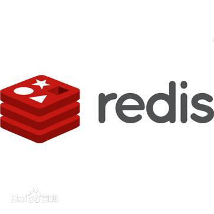
REmote DIctionary Server(Redis) 是一个由 Salvatore Sanfilippo 写的 key-value 存储系统，是跨平台的非关系型数据库。
Redis 是一个开源的使用 ANSI C 语言编写、遵守 BSD 协议、支持网络、可基于内存、分布式、可选持久性的键值对(Key-Value)存储数据库，并提供多种语言的 API。
Redis 通常被称为数据结构服务器，因为值（value）可以是字符串(String)、哈希(Hash)、列表(list)、集合(sets)和有序集合(sorted sets)等类型。
本教程是为专业的程序开发人员，通过本教程你可以一步一步了解 Redis 的应用。
阅读本教程前，你需要了解基本的数据结构，例如以下几种：
在阅读本教程前，你需要了解基本的数据结构。
Redis 官网：https://redis.io/
源码地址：https://github.com/redis/redis
Redis 在线测试：http://try.redis.io/
Redis 命令参考：http://doc.redisfans.com/
Redis（Remote Dictionary Server）是一个开源的内存数据库，遵守 BSD 协议，它提供了一个高性能的键值（key-value）存储系统，常用于缓存、消息队列、会话存储等应用场景。
性能极高：Redis 以其极高的性能而著称，能够支持每秒数十万次的读写操作24。这使得Redis成为处理高并发请求的理想选择，尤其是在需要快速响应的场景中，如缓存、会话管理、排行榜等。
丰富的数据类型：Redis 不仅支持基本的键值存储，还提供了丰富的数据类型，包括字符串、列表、集合、哈希表、有序集合等。这些数据类型为开发者提供了灵活的数据操作能力，使得Redis可以适应各种不同的应用场景。
原子性操作：Redis 的所有操作都是原子性的，这意味着操作要么完全执行，要么完全不执行。这种特性对于确保数据的一致性和完整性至关重要，尤其是在高并发环境下处理事务时。
持久化：Redis 支持数据的持久化，可以将内存中的数据保存到磁盘中，以便在系统重启后恢复数据。这为 Redis 提供了数据安全性，确保数据不会因为系统故障而丢失。
支持发布/订阅模式：Redis 内置了发布/订阅模式（Pub/Sub），允许客户端之间通过消息传递进行通信。这使得 Redis 可以作为消息队列和实时数据传输的平台。
单线程模型：尽管 Redis 是单线程的，但它通过高效的事件驱动模型来处理并发请求，确保了高性能和低延迟。单线程模型也简化了并发控制的复杂性。
主从复制：Redis 支持主从复制，可以通过从节点来备份数据或分担读请求，提高数据的可用性和系统的伸缩性。
应用场景广泛：Redis 被广泛应用于各种场景，包括但不限于缓存系统、会话存储、排行榜、实时分析、地理空间数据索引等。
社区支持：Redis 拥有一个活跃的开发者社区，提供了大量的文档、教程和第三方库，这为开发者提供了强大的支持和丰富的资源。
跨平台兼容性：Redis 可以在多种操作系统上运行，包括 Linux、macOS 和 Windows，这使得它能够在不同的技术栈中灵活部署。
Redis 与其他 key-value 存储系统的主要区别在于其提供了丰富的数据类型、高性能的读写能力、原子性操作、持久化机制、以及丰富的特性集。
以下是 Redis 的一些独特之处：
丰富的数据类型：Redis 不仅仅支持简单的 key-value 类型的数据，还提供了 list、set、zset（有序集合）、hash 等数据结构的存储。这些数据类型可以更好地满足特定的业务需求，使得 Redis 可以用于更广泛的应用场景。
高性能的读写能力：Redis 能读的速度是 110000次/s，写的速度是 81000次/s。这种高性能主要得益于 Redis 将数据存储在内存中，从而显著提高了数据的访问速度。
原子性操作：Redis 的所有操作都是原子性的，这意味着操作要么完全执行，要么完全不执行。这种特性对于确保数据的一致性和完整性非常重要。
持久化机制：Redis 支持数据的持久化，可以将内存中的数据保存在磁盘中，以便在系统重启后能够再次加载使用。这为 Redis 提供了数据安全性，确保数据不会因为系统故障而丢失。
丰富的特性集：Redis 还支持 publish/subscribe（发布/订阅）模式、通知、key 过期等高级特性。这些特性使得 Redis 可以用于消息队列、实时数据分析等复杂的应用场景。
主从复制和高可用性：Redis 支持 master-slave 模式的数据备份，提供了数据的备份和主从复制功能，增强了数据的可用性和容错性。
支持 Lua 脚本：Redis 支持使用 Lua 脚本来编写复杂的操作，这些脚本可以在服务器端执行，提供了更多的灵活性和强大的功能。
单线程模型：尽管 Redis 是单线程的，但它通过高效的事件驱动模型来处理并发请求，确保了高性能和低延迟。
下载地址：https://github.com/redis-windows/redis-windows/releases。
Redis 支持 32 位和 64 位。这个需要根据你系统平台的实际情况选择，这里我们下载 Redis-x64-xxx.zip压缩包到 C 盘，解压后，将文件夹重新命名为 redis。
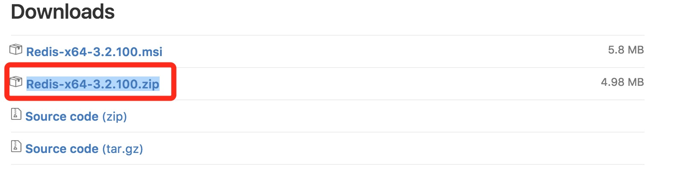
打开文件夹，内容如下：
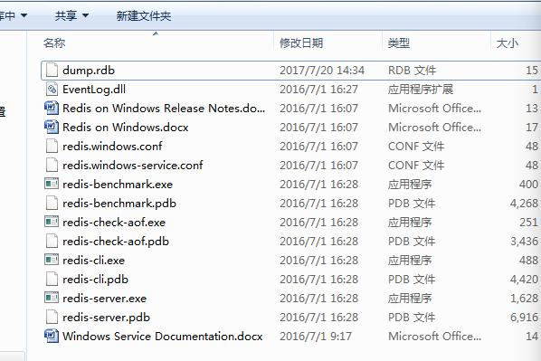
打开一个 cmd 窗口 使用 cd 命令切换目录到 C:\redis 运行：
redis-server.exe redis.windows.conf
如果想方便的话，可以把 redis 的路径加到系统的环境变量里，这样就省得再输路径了，后面的那个 redis.windows.conf 可以省略，如果省略，会启用默认的。输入之后，会显示如下界面：
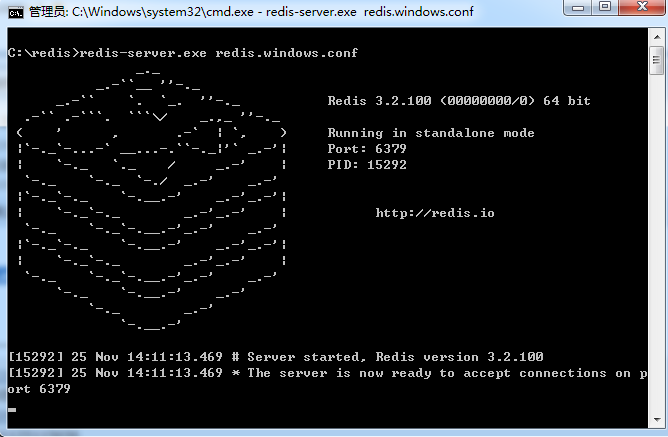
这时候另启一个 cmd 窗口，原来的不要关闭，不然就无法访问服务端了。
切换到 redis 目录下运行:
redis-cli.exe -h 127.0.0.1 -p 6379
设置键值对:
set myKey abc
取出键值对:
get myKey
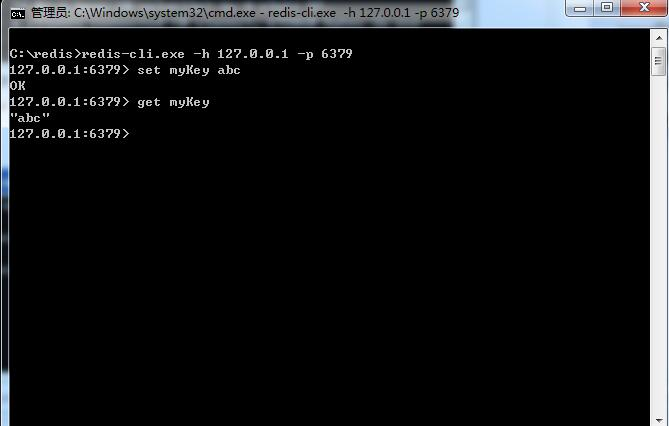
下载地址：http://redis.io/download，下载最新稳定版本。
本教程使用的最新文档版本为 2.8.17，下载并安装：
# wget http://download.redis.io/releases/redis-6.0.8.tar.gz # tar -xzvf redis-6.0.8.tar.gz # cd redis-6.0.8 # make
执行完 make 命令后，redis-6.0.8 的 src 目录下会出现编译后的 redis 服务程序 redis-server，还有用于测试的客户端程序 redis-cli：
下面启动 redis 服务：
# cd src # ./redis-server
注意这种方式启动 redis 使用的是默认配置。也可以通过启动参数告诉 redis 使用指定配置文件使用下面命令启动。
# cd src # ./redis-server ../redis.conf
redis.conf 是一个默认的配置文件。我们可以根据需要使用自己的配置文件。
启动 redis 服务进程后，就可以使用测试客户端程序 redis-cli 和 redis 服务交互了。 比如：
# cd src # ./redis-cli redis> set foo bar OK redis> get foo "bar"
在 Ubuntu 系统安装 Redis 可以使用以下命令:
# sudo apt update # sudo apt install redis-server
# redis-server
# redis-cli
以上命令将打开以下终端：
redis 127.0.0.1:6379>
127.0.0.1 是本机 IP ，6379 是 redis 服务端口。现在我们输入 PING 命令。
redis 127.0.0.1:6379> ping PONG
以上说明我们已经成功安装了redis。
Redis 的配置文件位于 Redis 安装目录下，文件名为 redis.conf(Windows 名为 redis.windows.conf)。
你可以通过 CONFIG 命令查看或设置配置项。
Redis CONFIG 命令格式如下：
redis 127.0.0.1:6379> CONFIG GET CONFIG_SETTING_NAME
redis 127.0.0.1:6379> CONFIG GET loglevel 1) "loglevel" 2) "notice"
使用 * 号获取所有配置项：
redis 127.0.0.1:6379> CONFIG GET * 1) "dbfilename" 2) "dump.rdb" 3) "requirepass" 4) "" 5) "masterauth" 6) "" 7) "unixsocket" 8) "" 9) "logfile" 10) "" 11) "pidfile" 12) "/var/run/redis.pid" 13) "maxmemory" 14) "0" 15) "maxmemory-samples" 16) "3" 17) "timeout" 18) "0" 19) "tcp-keepalive" 20) "0" 21) "auto-aof-rewrite-percentage" 22) "100" 23) "auto-aof-rewrite-min-size" 24) "67108864" 25) "hash-max-ziplist-entries" 26) "512" 27) "hash-max-ziplist-value" 28) "64" 29) "list-max-ziplist-entries" 30) "512" 31) "list-max-ziplist-value" 32) "64" 33) "set-max-intset-entries" 34) "512" 35) "zset-max-ziplist-entries" 36) "128" 37) "zset-max-ziplist-value" 38) "64" 39) "hll-sparse-max-bytes" 40) "3000" 41) "lua-time-limit" 42) "5000" 43) "slowlog-log-slower-than" 44) "10000" 45) "latency-monitor-threshold" 46) "0" 47) "slowlog-max-len" 48) "128" 49) "port" 50) "6379" 51) "tcp-backlog" 52) "511" 53) "databases" 54) "16" 55) "repl-ping-slave-period" 56) "10" 57) "repl-timeout" 58) "60" 59) "repl-backlog-size" 60) "1048576" 61) "repl-backlog-ttl" 62) "3600" 63) "maxclients" 64) "4064" 65) "watchdog-period" 66) "0" 67) "slave-priority" 68) "100" 69) "min-slaves-to-write" 70) "0" 71) "min-slaves-max-lag" 72) "10" 73) "hz" 74) "10" 75) "no-appendfsync-on-rewrite" 76) "no" 77) "slave-serve-stale-data" 78) "yes" 79) "slave-read-only" 80) "yes" 81) "stop-writes-on-bgsave-error" 82) "yes" 83) "daemonize" 84) "no" 85) "rdbcompression" 86) "yes" 87) "rdbchecksum" 88) "yes" 89) "activerehashing" 90) "yes" 91) "repl-disable-tcp-nodelay" 92) "no" 93) "aof-rewrite-incremental-fsync" 94) "yes" 95) "appendonly" 96) "no" 97) "dir" 98) "/home/deepak/Downloads/redis-2.8.13/src" 99) "maxmemory-policy" 100) "volatile-lru" 101) "appendfsync" 102) "everysec" 103) "save" 104) "3600 1 300 100 60 10000" 105) "loglevel" 106) "notice" 107) "client-output-buffer-limit" 108) "normal 0 0 0 slave 268435456 67108864 60 pubsub 33554432 8388608 60" 109) "unixsocketperm" 110) "0" 111) "slaveof" 112) "" 113) "notify-keyspace-events" 114) "" 115) "bind" 116) ""
你可以通过修改 redis.conf 文件或使用 CONFIG set 命令来修改配置。
CONFIG SET 命令基本语法：
redis 127.0.0.1:6379> CONFIG SET CONFIG_SETTING_NAME NEW_CONFIG_VALUE
redis 127.0.0.1:6379> CONFIG SET loglevel "notice" OK redis 127.0.0.1:6379> CONFIG GET loglevel 1) "loglevel" 2) "notice"
redis.conf 配置项说明如下：
| 序号 | 配置项 | 说明 |
|---|---|---|
| 1 | daemonize no |
Redis 默认不是以守护进程的方式运行，可以通过该配置项修改，使用 yes 启用守护进程（Windows 不支持守护线程的配置为 no ） |
| 2 | pidfile /var/run/redis.pid |
当 Redis 以守护进程方式运行时，Redis 默认会把 pid 写入 /var/run/redis.pid 文件，可以通过 pidfile 指定 |
| 3 |
port 6379 |
指定 Redis 监听端口，默认端口为 6379，作者在自己的一篇博文中解释了为什么选用 6379 作为默认端口，因为 6379 在手机按键上 MERZ 对应的号码，而 MERZ 取自意大利歌女 Alessia Merz 的名字 |
| 4 | bind 127.0.0.1 |
绑定的主机地址 |
| 5 | timeout 300 |
当客户端闲置多长秒后关闭连接，如果指定为 0 ，表示关闭该功能 |
| 6 | loglevel notice |
指定日志记录级别，Redis 总共支持四个级别：debug、verbose、notice、warning，默认为 notice |
| 7 | logfile stdout |
日志记录方式，默认为标准输出，如果配置 Redis 为守护进程方式运行，而这里又配置为日志记录方式为标准输出，则日志将会发送给 /dev/null |
| 8 | databases 16 |
设置数据库的数量，默认数据库为0，可以使用SELECT 命令在连接上指定数据库id |
| 9 |
save <seconds> <changes> Redis 默认配置文件中提供了三个条件： save 900 1 save 300 10 save 60 10000 分别表示 900 秒（15 分钟）内有 1 个更改，300 秒（5 分钟）内有 10 个更改以及 60 秒内有 10000 个更改。 |
指定在多长时间内，有多少次更新操作，就将数据同步到数据文件，可以多个条件配合 |
| 10 | rdbcompression yes |
指定存储至本地数据库时是否压缩数据，默认为 yes，Redis 采用 LZF 压缩，如果为了节省 CPU 时间，可以关闭该选项，但会导致数据库文件变的巨大 |
| 11 | dbfilename dump.rdb |
指定本地数据库文件名，默认值为 dump.rdb |
| 12 | dir ./ |
指定本地数据库存放目录 |
| 13 | slaveof <masterip> <masterport> |
设置当本机为 slave 服务时，设置 master 服务的 IP 地址及端口，在 Redis 启动时，它会自动从 master 进行数据同步 |
| 14 | masterauth <master-password> |
当 master 服务设置了密码保护时，slave 服务连接 master 的密码 |
| 15 | requirepass foobared |
设置 Redis 连接密码，如果配置了连接密码，客户端在连接 Redis 时需要通过 AUTH <password> 命令提供密码，默认关闭 |
| 16 | maxclients 128 |
设置同一时间最大客户端连接数，默认无限制，Redis 可以同时打开的客户端连接数为 Redis 进程可以打开的最大文件描述符数，如果设置 maxclients 0，表示不作限制。当客户端连接数到达限制时，Redis 会关闭新的连接并向客户端返回 max number of clients reached 错误信息 |
| 17 | maxmemory <bytes> |
指定 Redis 最大内存限制，Redis 在启动时会把数据加载到内存中，达到最大内存后，Redis 会先尝试清除已到期或即将到期的 Key，当此方法处理 后，仍然到达最大内存设置，将无法再进行写入操作，但仍然可以进行读取操作。Redis 新的 vm 机制，会把 Key 存放内存，Value 会存放在 swap 区 |
| 18 | appendonly no |
指定是否在每次更新操作后进行日志记录，Redis 在默认情况下是异步的把数据写入磁盘，如果不开启，可能会在断电时导致一段时间内的数据丢失。因为 redis 本身同步数据文件是按上面 save 条件来同步的，所以有的数据会在一段时间内只存在于内存中。默认为 no |
| 19 | appendfilename appendonly.aof |
指定更新日志文件名，默认为 appendonly.aof |
| 20 | appendfsync everysec |
指定更新日志条件，共有 3 个可选值：
|
| 21 | vm-enabled no |
指定是否启用虚拟内存机制，默认值为 no，简单的介绍一下，VM 机制将数据分页存放，由 Redis 将访问量较少的页即冷数据 swap 到磁盘上，访问多的页面由磁盘自动换出到内存中（在后面的文章我会仔细分析 Redis 的 VM 机制） |
| 22 | vm-swap-file /tmp/redis.swap |
虚拟内存文件路径，默认值为 /tmp/redis.swap，不可多个 Redis 实例共享 |
| 23 | vm-max-memory 0 |
将所有大于 vm-max-memory 的数据存入虚拟内存，无论 vm-max-memory 设置多小，所有索引数据都是内存存储的(Redis 的索引数据 就是 keys)，也就是说，当 vm-max-memory 设置为 0 的时候，其实是所有 value 都存在于磁盘。默认值为 0 |
| 24 | vm-page-size 32 |
Redis swap 文件分成了很多的 page，一个对象可以保存在多个 page 上面，但一个 page 上不能被多个对象共享，vm-page-size 是要根据存储的 数据大小来设定的，作者建议如果存储很多小对象，page 大小最好设置为 32 或者 64bytes；如果存储很大大对象，则可以使用更大的 page，如果不确定，就使用默认值 |
| 25 | vm-pages 134217728 |
设置 swap 文件中的 page 数量，由于页表（一种表示页面空闲或使用的 bitmap）是在放在内存中的，，在磁盘上每 8 个 pages 将消耗 1byte 的内存。 |
| 26 | vm-max-threads 4 |
设置访问swap文件的线程数,最好不要超过机器的核数,如果设置为0,那么所有对swap文件的操作都是串行的，可能会造成比较长时间的延迟。默认值为4 |
| 27 | glueoutputbuf yes |
设置在向客户端应答时，是否把较小的包合并为一个包发送，默认为开启 |
| 28 |
hash-max-zipmap-entries 64 hash-max-zipmap-value 512 |
指定在超过一定的数量或者最大的元素超过某一临界值时，采用一种特殊的哈希算法 |
| 29 | activerehashing yes |
指定是否激活重置哈希，默认为开启（后面在介绍 Redis 的哈希算法时具体介绍） |
| 30 |
include /path/to/local.conf |
指定包含其它的配置文件，可以在同一主机上多个Redis实例之间使用同一份配置文件，而同时各个实例又拥有自己的特定配置文件 |
Redis 主要支持以下几种数据类型：
string 是 redis 最基本的类型，你可以理解成与 Memcached 一模一样的类型，一个 key 对应一个 value。
string 类型是二进制安全的。意思是 redis 的 string 可以包含任何数据，比如jpg图片或者序列化的对象。
string 类型是 Redis 最基本的数据类型，string 类型的值最大能存储 512MB。
SET key value：设置键的值。GET key：获取键的值。INCR key：将键的值加 1。DECR key：将键的值减 1。APPEND key value：将值追加到键的值之后。redis 127.0.0.1:6379> SET runoob "菜鸟教程" OK redis 127.0.0.1:6379> GET runoob "菜鸟教程"
在以上实例中我们使用了 Redis 的 SET 和 GET 命令。键为 runoob，对应的值为 菜鸟教程。
注意：一个键最大能存储 512MB。
Redis hash 是一个键值(key=>value)对集合，类似于一个小型的 NoSQL 数据库。
Redis hash 是一个 string 类型的 field 和 value 的映射表，hash 特别适合用于存储对象。
每个哈希最多可以存储 2^32 - 1 个键值对。
HSET key field value：设置哈希表中字段的值。HGET key field：获取哈希表中字段的值。HGETALL key：获取哈希表中所有字段和值。HDEL key field：删除哈希表中的一个或多个字段。DEL runoob 用于删除前面测试用过的 key，不然会报错：(error) WRONGTYPE Operation against a key holding the wrong kind of value
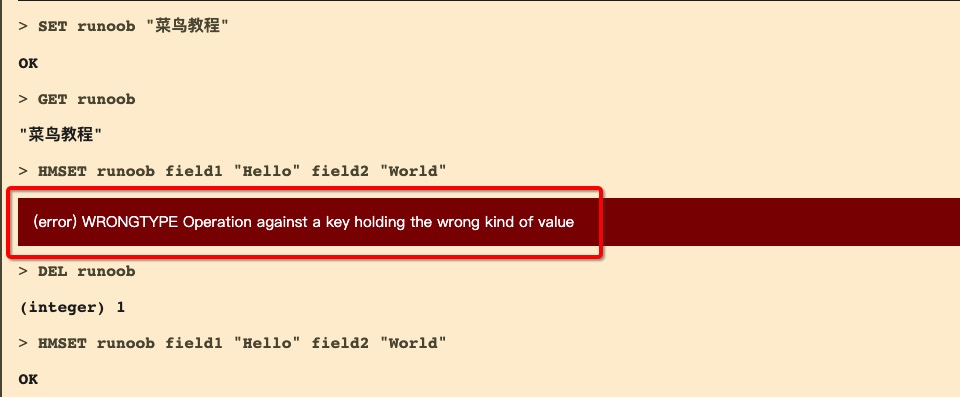
redis 127.0.0.1:6379> DEL runoob redis 127.0.0.1:6379> HMSET runoob field1 "Hello" field2 "World" "OK" redis 127.0.0.1:6379> HGET runoob field1 "Hello" redis 127.0.0.1:6379> HGET runoob field2 "World"
实例中我们使用了 Redis HMSET, HGET 命令，HMSET 设置了两个 field=>value 对, HGET 获取对应 field 对应的 value。
Redis 列表是简单的字符串列表，按照插入顺序排序。你可以添加一个元素到列表的头部（左边）或者尾部（右边）。
列表最多可以存储 2^32 - 1 个元素。
LPUSH key value：将值插入到列表头部。RPUSH key value：将值插入到列表尾部。LPOP key：移出并获取列表的第一个元素。RPOP key：移出并获取列表的最后一个元素。LRANGE key start stop：获取列表在指定范围内的元素。redis 127.0.0.1:6379> DEL runoob redis 127.0.0.1:6379> lpush runoob redis (integer) 1 redis 127.0.0.1:6379> lpush runoob mongodb (integer) 2 redis 127.0.0.1:6379> lpush runoob rabbitmq (integer) 3 redis 127.0.0.1:6379> lrange runoob 0 10 1) "rabbitmq" 2) "mongodb" 3) "redis" redis 127.0.0.1:6379>
Redis 的 Set 是 string 类型的无序集合。
集合是通过哈希表实现的，所以添加，删除，查找的复杂度都是 O(1)。
SADD key value：向集合添加一个或多个成员。SREM key value：移除集合中的一个或多个成员。SMEMBERS key：返回集合中的所有成员。SISMEMBER key value：判断值是否是集合的成员。添加一个 string 元素到 key 对应的 set 集合中，成功返回 1，如果元素已经在集合中返回 0。
sadd key member
redis 127.0.0.1:6379> DEL runoob redis 127.0.0.1:6379> sadd runoob redis (integer) 1 redis 127.0.0.1:6379> sadd runoob mongodb (integer) 1 redis 127.0.0.1:6379> sadd runoob rabbitmq (integer) 1 redis 127.0.0.1:6379> sadd runoob rabbitmq (integer) 0 redis 127.0.0.1:6379> smembers runoob 1) "redis" 2) "rabbitmq" 3) "mongodb"
注意：以上实例中 rabbitmq 添加了两次，但根据集合内元素的唯一性，第二次插入的元素将被忽略。
集合中最大的成员数为 232 - 1(4294967295, 每个集合可存储40多亿个成员)。
不同的是每个元素都会关联一个double类型的分数。redis正是通过分数来为集合中的成员进行从小到大的排序。
zset的成员是唯一的,但分数(score)却可以重复。
ZADD key score value：向有序集合添加一个或多个成员，或更新已存在成员的分数。ZRANGE key start stop [WITHSCORES]：返回指定范围内的成员。ZREM key value：移除有序集合中的一个或多个成员。ZSCORE key value：返回有序集合中，成员的分数值。添加元素到集合，元素在集合中存在则更新对应score
zadd key score member
redis 127.0.0.1:6379> DEL runoob redis 127.0.0.1:6379> zadd runoob 0 redis (integer) 1 redis 127.0.0.1:6379> zadd runoob 0 mongodb (integer) 1 redis 127.0.0.1:6379> zadd runoob 0 rabbitmq (integer) 1 redis 127.0.0.1:6379> zadd runoob 0 rabbitmq (integer) 0 redis 127.0.0.1:6379> ZRANGEBYSCORE runoob 0 1000 1) "mongodb" 2) "rabbitmq" 3) "redis"
Redis 命令用于在 redis 服务上执行操作。
要在 redis 服务上执行命令需要一个 redis 客户端。Redis 客户端在我们之前下载的的 redis 的安装包中。
Redis 客户端的基本语法为：
$ redis-cli
以下实例讲解了如何启动 redis 客户端：
启动 redis 服务器，打开终端并输入命令 redis-cli，该命令会连接本地的 redis 服务。
$ redis-cli redis 127.0.0.1:6379> redis 127.0.0.1:6379> PING PONG
在以上实例中我们连接到本地的 redis 服务并执行 PING 命令，该命令用于检测 redis 服务是否启动。
如果需要在远程 redis 服务上执行命令，同样我们使用的也是 redis-cli 命令。
$ redis-cli -h host -p port -a password
以下实例演示了如何连接到主机为 127.0.0.1，端口为 6379 ，密码为 mypass 的 redis 服务上。
$redis-cli -h 127.0.0.1 -p 6379 -a "mypass" redis 127.0.0.1:6379> redis 127.0.0.1:6379> PING PONG
Redis 键命令用于管理 redis 的键。
Redis 键命令的基本语法如下：
redis 127.0.0.1:6379> COMMAND KEY_NAME
redis 127.0.0.1:6379> SET runoobkey redis OK redis 127.0.0.1:6379> DEL runoobkey (integer) 1
在以上实例中 DEL 是一个命令， runoobkey 是一个键。 如果键被删除成功，命令执行后输出 (integer) 1，否则将输出 (integer) 0
下表给出了与 Redis 键相关的基本命令：
| 序号 | 命令及描述 |
|---|---|
| 1 | DEL key 该命令用于在 key 存在时删除 key。 |
| 2 | DUMP key 序列化给定 key ，并返回被序列化的值。 |
| 3 | EXISTS key 检查给定 key 是否存在。 |
| 4 | EXPIRE key seconds 为给定 key 设置过期时间，以秒计。 |
| 5 | EXPIREAT key timestamp EXPIREAT 的作用和 EXPIRE 类似，都用于为 key 设置过期时间。 不同在于 EXPIREAT 命令接受的时间参数是 UNIX 时间戳(unix timestamp)。 |
| 6 | PEXPIRE key milliseconds 设置 key 的过期时间以毫秒计。 |
| 7 | PEXPIREAT key milliseconds-timestamp 设置 key 过期时间的时间戳(unix timestamp) 以毫秒计 |
| 8 | KEYS pattern 查找所有符合给定模式( pattern)的 key 。 |
| 9 | MOVE key db 将当前数据库的 key 移动到给定的数据库 db 当中。 |
| 10 | PERSIST key 移除 key 的过期时间，key 将持久保持。 |
| 11 | PTTL key 以毫秒为单位返回 key 的剩余的过期时间。 |
| 12 | TTL key 以秒为单位，返回给定 key 的剩余生存时间(TTL, time to live)。 |
| 13 | RANDOMKEY 从当前数据库中随机返回一个 key 。 |
| 14 | RENAME key newkey 修改 key 的名称 |
| 15 | RENAMENX key newkey 仅当 newkey 不存在时，将 key 改名为 newkey 。 |
| 16 | SCAN cursor [MATCH pattern] [COUNT count] 迭代数据库中的数据库键。 |
| 17 | TYPE key 返回 key 所储存的值的类型。 |
更多命令请参考：https://redis.io/commands
Redis 字符串数据类型的相关命令用于管理 redis 字符串值，基本语法如下：
redis 127.0.0.1:6379> COMMAND KEY_NAME
redis 127.0.0.1:6379> SET runoobkey redis OK redis 127.0.0.1:6379> GET runoobkey "redis"
在以上实例中我们使用了 SET 和 GET 命令，键为 runoobkey。
下表列出了常用的 redis 字符串命令：
| 序号 | 命令及描述 |
|---|---|
| 1 | SET key value 设置指定 key 的值。 |
| 2 | GET key 获取指定 key 的值。 |
| 3 | GETRANGE key start end 返回 key 中字符串值的子字符 |
| 4 | GETSET key value 将给定 key 的值设为 value ，并返回 key 的旧值(old value)。 |
| 5 | GETBIT key offset 对 key 所储存的字符串值，获取指定偏移量上的位(bit)。 |
| 6 | MGET key1 [key2..] 获取所有(一个或多个)给定 key 的值。 |
| 7 | SETBIT key offset value 对 key 所储存的字符串值，设置或清除指定偏移量上的位(bit)。 |
| 8 | SETEX key seconds value 将值 value 关联到 key ，并将 key 的过期时间设为 seconds (以秒为单位)。 |
| 9 | SETNX key value 只有在 key 不存在时设置 key 的值。 |
| 10 | SETRANGE key offset value 用 value 参数覆写给定 key 所储存的字符串值，从偏移量 offset 开始。 |
| 11 | STRLEN key 返回 key 所储存的字符串值的长度。 |
| 12 | MSET key value [key value ...] 同时设置一个或多个 key-value 对。 |
| 13 | MSETNX key value [key value ...] 同时设置一个或多个 key-value 对，当且仅当所有给定 key 都不存在。 |
| 14 | PSETEX key milliseconds value 这个命令和 SETEX 命令相似，但它以毫秒为单位设置 key 的生存时间，而不是像 SETEX 命令那样，以秒为单位。 |
| 15 | INCR key 将 key 中储存的数字值增一。 |
| 16 | INCRBY key increment 将 key 所储存的值加上给定的增量值（increment） 。 |
| 17 | INCRBYFLOAT key increment 将 key 所储存的值加上给定的浮点增量值（increment） 。 |
| 18 | DECR key 将 key 中储存的数字值减一。 |
| 19 | DECRBY key decrement key 所储存的值减去给定的减量值（decrement） 。 |
| 20 | APPEND key value 如果 key 已经存在并且是一个字符串， APPEND 命令将指定的 value 追加到该 key 原来值（value）的末尾。 |
更多命令请参考：https://redis.io/commands
Redis hash 是一个 string 类型的 field（字段） 和 value（值） 的映射表，hash 特别适合用于存储对象。
Redis 中每个 hash 可以存储 232 - 1 键值对（40多亿）。
127.0.0.1:6379> HMSET runoobkey name "redis tutorial" description "redis basic commands for caching" likes 20 visitors 23000 OK 127.0.0.1:6379> HGETALL runoobkey 1) "name" 2) "redis tutorial" 3) "description" 4) "redis basic commands for caching" 5) "likes" 6) "20" 7) "visitors" 8) "23000"
在以上实例中，我们设置了 redis 的一些描述信息(name, description, likes, visitors) 到哈希表的 runoobkey 中。
下表列出了 redis hash 基本的相关命令：
| 序号 | 命令及描述 |
|---|---|
| 1 | HDEL key field1 [field2] 删除一个或多个哈希表字段 |
| 2 | HEXISTS key field 查看哈希表 key 中，指定的字段是否存在。 |
| 3 | HGET key field 获取存储在哈希表中指定字段的值。 |
| 4 | HGETALL key 获取在哈希表中指定 key 的所有字段和值 |
| 5 | HINCRBY key field increment 为哈希表 key 中的指定字段的整数值加上增量 increment 。 |
| 6 | HINCRBYFLOAT key field increment 为哈希表 key 中的指定字段的浮点数值加上增量 increment 。 |
| 7 | HKEYS key 获取哈希表中的所有字段 |
| 8 | HLEN key 获取哈希表中字段的数量 |
| 9 | HMGET key field1 [field2] 获取所有给定字段的值 |
| 10 | HMSET key field1 value1 [field2 value2 ] 同时将多个 field-value (域-值)对设置到哈希表 key 中。 |
| 11 | HSET key field value 将哈希表 key 中的字段 field 的值设为 value 。 |
| 12 | HSETNX key field value 只有在字段 field 不存在时，设置哈希表字段的值。 |
| 13 | HVALS key 获取哈希表中所有值。 |
| 14 | HSCAN key cursor [MATCH pattern] [COUNT count] 迭代哈希表中的键值对。 |
更多命令请参考：https://redis.io/commands
Redis列表是简单的字符串列表，按照插入顺序排序。你可以添加一个元素到列表的头部（左边）或者尾部（右边）
一个列表最多可以包含 232 - 1 个元素 (4294967295, 每个列表超过40亿个元素)。
redis 127.0.0.1:6379> LPUSH runoobkey redis (integer) 1 redis 127.0.0.1:6379> LPUSH runoobkey mongodb (integer) 2 redis 127.0.0.1:6379> LPUSH runoobkey mysql (integer) 3 redis 127.0.0.1:6379> LRANGE runoobkey 0 10 1) "mysql" 2) "mongodb" 3) "redis"
在以上实例中我们使用了 LPUSH 将三个值插入了名为 runoobkey 的列表当中。
下表列出了列表相关的基本命令：
| 序号 | 命令及描述 |
|---|---|
| 1 | BLPOP key1 [key2 ] timeout 移出并获取列表的第一个元素， 如果列表没有元素会阻塞列表直到等待超时或发现可弹出元素为止。 |
| 2 | BRPOP key1 [key2 ] timeout 移出并获取列表的最后一个元素， 如果列表没有元素会阻塞列表直到等待超时或发现可弹出元素为止。 |
| 3 | BRPOPLPUSH source destination timeout 从列表中弹出一个值，将弹出的元素插入到另外一个列表中并返回它； 如果列表没有元素会阻塞列表直到等待超时或发现可弹出元素为止。 |
| 4 | LINDEX key index 通过索引获取列表中的元素 |
| 5 | LINSERT key BEFORE|AFTER pivot value 在列表的元素前或者后插入元素 |
| 6 | LLEN key 获取列表长度 |
| 7 | LPOP key 移出并获取列表的第一个元素 |
| 8 | LPUSH key value1 [value2] 将一个或多个值插入到列表头部 |
| 9 | LPUSHX key value 将一个值插入到已存在的列表头部 |
| 10 | LRANGE key start stop 获取列表指定范围内的元素 |
| 11 | LREM key count value 移除列表元素 |
| 12 | LSET key index value 通过索引设置列表元素的值 |
| 13 | LTRIM key start stop 对一个列表进行修剪(trim)，就是说，让列表只保留指定区间内的元素，不在指定区间之内的元素都将被删除。 |
| 14 | RPOP key 移除列表的最后一个元素，返回值为移除的元素。 |
| 15 | RPOPLPUSH source destination 移除列表的最后一个元素，并将该元素添加到另一个列表并返回 |
| 16 | RPUSH key value1 [value2] 在列表中添加一个或多个值到列表尾部 |
| 17 | RPUSHX key value 为已存在的列表添加值 |
Redis 的 Set 是 String 类型的无序集合。集合成员是唯一的，这就意味着集合中不能出现重复的数据。
集合对象的编码可以是 intset 或者 hashtable。
Redis 中集合是通过哈希表实现的，所以添加，删除，查找的复杂度都是 O(1)。
集合中最大的成员数为 232 - 1 (4294967295, 每个集合可存储40多亿个成员)。
redis 127.0.0.1:6379> SADD runoobkey redis (integer) 1 redis 127.0.0.1:6379> SADD runoobkey mongodb (integer) 1 redis 127.0.0.1:6379> SADD runoobkey mysql (integer) 1 redis 127.0.0.1:6379> SADD runoobkey mysql (integer) 0 redis 127.0.0.1:6379> SMEMBERS runoobkey 1) "mysql" 2) "mongodb" 3) "redis"
在以上实例中我们通过 SADD 命令向名为 runoobkey 的集合插入的三个元素。
下表列出了 Redis 集合基本命令：
| 序号 | 命令及描述 |
|---|---|
| 1 | SADD key member1 [member2] 向集合添加一个或多个成员 |
| 2 | SCARD key 获取集合的成员数 |
| 3 | SDIFF key1 [key2] 返回第一个集合与其他集合之间的差异。 |
| 4 | SDIFFSTORE destination key1 [key2] 返回给定所有集合的差集并存储在 destination 中 |
| 5 | SINTER key1 [key2] 返回给定所有集合的交集 |
| 6 | SINTERSTORE destination key1 [key2] 返回给定所有集合的交集并存储在 destination 中 |
| 7 | SISMEMBER key member 判断 member 元素是否是集合 key 的成员 |
| 8 | SMEMBERS key 返回集合中的所有成员 |
| 9 | SMOVE source destination member 将 member 元素从 source 集合移动到 destination 集合 |
| 10 | SPOP key 移除并返回集合中的一个随机元素 |
| 11 | SRANDMEMBER key [count] 返回集合中一个或多个随机数 |
| 12 | SREM key member1 [member2] 移除集合中一个或多个成员 |
| 13 | SUNION key1 [key2] 返回所有给定集合的并集 |
| 14 | SUNIONSTORE destination key1 [key2] 所有给定集合的并集存储在 destination 集合中 |
| 15 | SSCAN key cursor [MATCH pattern] [COUNT count] 迭代集合中的元素 |
Redis 有序集合和集合一样也是 string 类型元素的集合,且不允许重复的成员。
不同的是每个元素都会关联一个 double 类型的分数。redis 正是通过分数来为集合中的成员进行从小到大的排序。
有序集合的成员是唯一的,但分数(score)却可以重复。
集合是通过哈希表实现的，所以添加，删除，查找的复杂度都是 O(1)。 集合中最大的成员数为 232 - 1 (4294967295, 每个集合可存储40多亿个成员)。
redis 127.0.0.1:6379> ZADD runoobkey 1 redis (integer) 1 redis 127.0.0.1:6379> ZADD runoobkey 2 mongodb (integer) 1 redis 127.0.0.1:6379> ZADD runoobkey 3 mysql (integer) 1 redis 127.0.0.1:6379> ZADD runoobkey 3 mysql (integer) 0 redis 127.0.0.1:6379> ZADD runoobkey 4 mysql (integer) 0 redis 127.0.0.1:6379> ZRANGE runoobkey 0 10 WITHSCORES 1) "redis" 2) "1" 3) "mongodb" 4) "2" 5) "mysql" 6) "4"
在以上实例中我们通过命令 ZADD 向 redis 的有序集合中添加了三个值并关联上分数。
下表列出了 redis 有序集合的基本命令:
Redis 在 2.8.9 版本添加了 HyperLogLog 结构。
Redis HyperLogLog 是用来做基数统计的算法，HyperLogLog 的优点是，在输入元素的数量或者体积非常非常大时，计算基数所需的空间总是固定 的、并且是很小的。
在 Redis 里面，每个 HyperLogLog 键只需要花费 12 KB 内存，就可以计算接近 2^64 个不同元素的基 数。这和计算基数时，元素越多耗费内存就越多的集合形成鲜明对比。
但是，因为 HyperLogLog 只会根据输入元素来计算基数，而不会储存输入元素本身，所以 HyperLogLog 不能像集合那样，返回输入的各个元素。
比如数据集 {1, 3, 5, 7, 5, 7, 8}， 那么这个数据集的基数集为 {1, 3, 5 ,7, 8}, 基数(不重复元素)为5。 基数估计就是在误差可接受的范围内，快速计算基数。
以下实例演示了 HyperLogLog 的工作过程：
redis 127.0.0.1:6379> PFADD runoobkey "redis" 1) (integer) 1 redis 127.0.0.1:6379> PFADD runoobkey "mongodb" 1) (integer) 1 redis 127.0.0.1:6379> PFADD runoobkey "mysql" 1) (integer) 1 redis 127.0.0.1:6379> PFCOUNT runoobkey (integer) 3
下表列出了 redis HyperLogLog 的基本命令：
| 序号 | 命令及描述 |
|---|---|
| 1 | PFADD key element [element ...] 添加指定元素到 HyperLogLog 中。 |
| 2 | PFCOUNT key [key ...] 返回给定 HyperLogLog 的基数估算值。 |
| 3 | PFMERGE destkey sourcekey [sourcekey ...] 将多个 HyperLogLog 合并为一个 HyperLogLog |
Redis 发布订阅 (pub/sub) 是一种消息通信模式：发送者 (pub) 发送消息，订阅者 (sub) 接收消息。
Redis 客户端可以订阅任意数量的频道。
下图展示了频道 channel1 ， 以及订阅这个频道的三个客户端 —— client2 、 client5 和 client1 之间的关系：
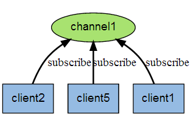
当有新消息通过 PUBLISH 命令发送给频道 channel1 时， 这个消息就会被发送给订阅它的三个客户端：
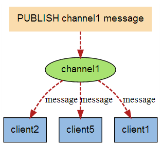
以下实例演示了发布订阅是如何工作的，需要开启两个 redis-cli 客户端。
在我们实例中我们创建了订阅频道名为 runoobChat:
现在，我们先重新开启个 redis 客户端，然后在同一个频道 runoobChat 发布两次消息，订阅者就能接收到消息。
gif 演示如下：
开启本地 Redis 服务，开启两个 redis-cli 客户端。
在第一个 redis-cli 客户端输入 SUBSCRIBE runoobChat，意思是订阅 runoobChat 频道。
在第二个 redis-cli 客户端输入 PUBLISH runoobChat "Redis PUBLISH test" 往 runoobChat 频道发送消息，这个时候在第一个 redis-cli 客户端就会看到由第二个 redis-cli 客户端发送的测试消息。
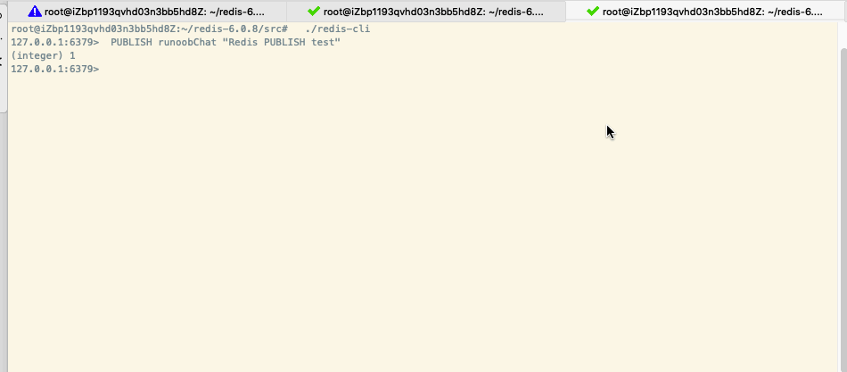
下表列出了 redis 发布订阅常用命令：
| 序号 | 命令及描述 |
|---|---|
| 1 | PSUBSCRIBE pattern [pattern ...] 订阅一个或多个符合给定模式的频道。 |
| 2 | PUBSUB subcommand [argument [argument ...]] 查看订阅与发布系统状态。 |
| 3 | PUBLISH channel message 将信息发送到指定的频道。 |
| 4 | PUNSUBSCRIBE [pattern [pattern ...]] 退订所有给定模式的频道。 |
| 5 | SUBSCRIBE channel [channel ...] 订阅给定的一个或多个频道的信息。 |
| 6 | UNSUBSCRIBE [channel [channel ...]] 指退订给定的频道。 |
Redis 事务可以一次执行多个命令， 并且带有以下三个重要的保证：
一个事务从开始到执行会经历以下三个阶段：
以下是一个事务的例子， 它先以 MULTI 开始一个事务， 然后将多个命令入队到事务中， 最后由 EXEC 命令触发事务， 一并执行事务中的所有命令：
redis 127.0.0.1:6379> MULTI OK redis 127.0.0.1:6379> SET book-name "Mastering C++ in 21 days" QUEUED redis 127.0.0.1:6379> GET book-name QUEUED redis 127.0.0.1:6379> SADD tag "C++" "Programming" "Mastering Series" QUEUED redis 127.0.0.1:6379> SMEMBERS tag QUEUED redis 127.0.0.1:6379> EXEC 1) OK 2) "Mastering C++ in 21 days" 3) (integer) 3 4) 1) "Mastering Series" 2) "C++" 3) "Programming"
单个 Redis 命令的执行是原子性的，但 Redis 没有在事务上增加任何维持原子性的机制，所以 Redis 事务的执行并不是原子性的。
事务可以理解为一个打包的批量执行脚本，但批量指令并非原子化的操作，中间某条指令的失败不会导致前面已做指令的回滚，也不会造成后续的指令不做。
这是官网上的说明 From redis docs on transactions:
It's important to note that even when a command fails, all the other commands in the queue are processed – Redis will not stop the processing of commands.
比如：
redis 127.0.0.1:7000> multi OK redis 127.0.0.1:7000> set a aaa QUEUED redis 127.0.0.1:7000> set b bbb QUEUED redis 127.0.0.1:7000> set c ccc QUEUED redis 127.0.0.1:7000> exec 1) OK 2) OK 3) OK
如果在 set b bbb 处失败，set a 已成功不会回滚，set c 还会继续执行。
下表列出了 redis 事务的相关命令：
| 序号 | 命令及描述 |
|---|---|
| 1 | DISCARD 取消事务，放弃执行事务块内的所有命令。 |
| 2 | EXEC 执行所有事务块内的命令。 |
| 3 | MULTI 标记一个事务块的开始。 |
| 4 | UNWATCH 取消 WATCH 命令对所有 key 的监视。 |
| 5 | WATCH key [key ...] 监视一个(或多个) key ，如果在事务执行之前这个(或这些) key 被其他命令所改动，那么事务将被打断。 |
Redis 脚本使用 Lua 解释器来执行脚本。 Redis 2.6 版本通过内嵌支持 Lua 环境。执行脚本的常用命令为 EVAL。
Eval 命令的基本语法如下：
redis 127.0.0.1:6379> EVAL script numkeys key [key ...] arg [arg ...]
以下实例演示了 redis 脚本工作过程：
redis 127.0.0.1:6379> EVAL "return {KEYS[1],KEYS[2],ARGV[1],ARGV[2]}" 2 key1 key2 first second
1) "key1"
2) "key2"
3) "first"
4) "second"
下表列出了 redis 脚本常用命令：
| 序号 | 命令及描述 |
|---|---|
| 1 | EVAL script numkeys key [key ...] arg [arg ...] 执行 Lua 脚本。 |
| 2 | EVALSHA sha1 numkeys key [key ...] arg [arg ...] 执行 Lua 脚本。 |
| 3 | SCRIPT EXISTS script [script ...] 查看指定的脚本是否已经被保存在缓存当中。 |
| 4 | SCRIPT FLUSH 从脚本缓存中移除所有脚本。 |
| 5 | SCRIPT KILL 杀死当前正在运行的 Lua 脚本。 |
| 6 | SCRIPT LOAD script 将脚本 script 添加到脚本缓存中，但并不立即执行这个脚本。 |
Redis 连接命令主要是用于连接 redis 服务。
以下实例演示了客户端如何通过密码验证连接到 redis 服务，并检测服务是否在运行：
redis 127.0.0.1:6379> AUTH "password" OK redis 127.0.0.1:6379> PING PONG
下表列出了 redis 连接的基本命令：
| 序号 | 命令及描述 |
|---|---|
| 1 | AUTH password 验证密码是否正确 |
| 2 | ECHO message 打印字符串 |
| 3 | PING 查看服务是否运行 |
| 4 | QUIT 关闭当前连接 |
| 5 | SELECT index 切换到指定的数据库 |
Redis 服务器命令主要是用于管理 redis 服务。
以下实例演示了如何获取 redis 服务器的统计信息：
redis 127.0.0.1:6379> INFO # Server redis_version:2.8.13 redis_git_sha1:00000000 redis_git_dirty:0 redis_build_id:c2238b38b1edb0e2 redis_mode:standalone os:Linux 3.5.0-48-generic x86_64 arch_bits:64 multiplexing_api:epoll gcc_version:4.7.2 process_id:3856 run_id:0e61abd297771de3fe812a3c21027732ac9f41fe tcp_port:6379 uptime_in_seconds:11554 uptime_in_days:0 hz:10 lru_clock:16651447 config_file: # Clients connected_clients:1 client-longest_output_list:0 client-biggest_input_buf:0 blocked_clients:0 # Memory used_memory:589016 used_memory_human:575.21K used_memory_rss:2461696 used_memory_peak:667312 used_memory_peak_human:651.67K used_memory_lua:33792 mem_fragmentation_ratio:4.18 mem_allocator:jemalloc-3.6.0 # Persistence loading:0 rdb_changes_since_last_save:3 rdb_bgsave_in_progress:0 rdb_last_save_time:1409158561 rdb_last_bgsave_status:ok rdb_last_bgsave_time_sec:0 rdb_current_bgsave_time_sec:-1 aof_enabled:0 aof_rewrite_in_progress:0 aof_rewrite_scheduled:0 aof_last_rewrite_time_sec:-1 aof_current_rewrite_time_sec:-1 aof_last_bgrewrite_status:ok aof_last_write_status:ok # Stats total_connections_received:24 total_commands_processed:294 instantaneous_ops_per_sec:0 rejected_connections:0 sync_full:0 sync_partial_ok:0 sync_partial_err:0 expired_keys:0 evicted_keys:0 keyspace_hits:41 keyspace_misses:82 pubsub_channels:0 pubsub_patterns:0 latest_fork_usec:264 # Replication role:master connected_slaves:0 master_repl_offset:0 repl_backlog_active:0 repl_backlog_size:1048576 repl_backlog_first_byte_offset:0 repl_backlog_histlen:0 # CPU used_cpu_sys:10.49 used_cpu_user:4.96 used_cpu_sys_children:0.00 used_cpu_user_children:0.01 # Keyspace db0:keys=94,expires=1,avg_ttl=41638810 db1:keys=1,expires=0,avg_ttl=0 db3:keys=1,expires=0,avg_ttl=0
下表列出了 redis 服务器的相关命令:
| 序号 | 命令及描述 |
|---|---|
| 1 | BGREWRITEAOF 异步执行一个 AOF（AppendOnly File） 文件重写操作 |
| 2 | BGSAVE 在后台异步保存当前数据库的数据到磁盘 |
| 3 | CLIENT KILL [ip:port] [ID client-id] 关闭客户端连接 |
| 4 | CLIENT LIST 获取连接到服务器的客户端连接列表 |
| 5 | CLIENT GETNAME 获取连接的名称 |
| 6 | CLIENT PAUSE timeout 在指定时间内终止运行来自客户端的命令 |
| 7 | CLIENT SETNAME connection-name 设置当前连接的名称 |
| 8 | CLUSTER SLOTS 获取集群节点的映射数组 |
| 9 | COMMAND 获取 Redis 命令详情数组 |
| 10 | COMMAND COUNT 获取 Redis 命令总数 |
| 11 | COMMAND GETKEYS 获取给定命令的所有键 |
| 12 | TIME 返回当前服务器时间 |
| 13 | COMMAND INFO command-name [command-name ...] 获取指定 Redis 命令描述的数组 |
| 14 | CONFIG GET parameter 获取指定配置参数的值 |
| 15 | CONFIG REWRITE 对启动 Redis 服务器时所指定的 redis.conf 配置文件进行改写 |
| 16 | CONFIG SET parameter value 修改 redis 配置参数，无需重启 |
| 17 | CONFIG RESETSTAT 重置 INFO 命令中的某些统计数据 |
| 18 | DBSIZE 返回当前数据库的 key 的数量 |
| 19 | DEBUG OBJECT key 获取 key 的调试信息 |
| 20 | DEBUG SEGFAULT 让 Redis 服务崩溃 |
| 21 | FLUSHALL 删除所有数据库的所有key |
| 22 | FLUSHDB 删除当前数据库的所有key |
| 23 | INFO [section] 获取 Redis 服务器的各种信息和统计数值 |
| 24 | LASTSAVE 返回最近一次 Redis 成功将数据保存到磁盘上的时间，以 UNIX 时间戳格式表示 |
| 25 | MONITOR 实时打印出 Redis 服务器接收到的命令，调试用 |
| 26 | ROLE 返回主从实例所属的角色 |
| 27 | SAVE 同步保存数据到硬盘 |
| 28 | SHUTDOWN [NOSAVE] [SAVE] 异步保存数据到硬盘，并关闭服务器 |
| 29 | SLAVEOF host port 将当前服务器转变为指定服务器的从属服务器(slave server) |
| 30 | SLOWLOG subcommand [argument] 管理 redis 的慢日志 |
| 31 | SYNC 用于复制功能(replication)的内部命令 |
Redis GEO 主要用于存储地理位置信息，并对存储的信息进行操作，该功能在 Redis 3.2 版本新增。
Redis GEO 操作方法有：
geoadd 用于存储指定的地理空间位置，可以将一个或多个经度(longitude)、纬度(latitude)、位置名称(member)添加到指定的 key 中。
geoadd 语法格式如下：
GEOADD key longitude latitude member [longitude latitude member ...]
以下实例中 key 为 Sicily，Palermo 和 Catania 为位置名称 ：
geopos 用于从给定的 key 里返回所有指定名称(member)的位置（经度和纬度），不存在的返回 nil。
geopos 语法格式如下：
GEOPOS key member [member ...]
geodist 用于返回两个给定位置之间的距离。
geodist 语法格式如下：
GEODIST key member1 member2 [m|km|ft|mi]
member1 member2 为两个地理位置。
最后一个距离单位参数说明：
georadius 以给定的经纬度为中心， 返回键包含的位置元素当中， 与中心的距离不超过给定最大距离的所有位置元素。
georadiusbymember 和 GEORADIUS 命令一样， 都可以找出位于指定范围内的元素， 但是 georadiusbymember 的中心点是由给定的位置元素决定的， 而不是使用经度和纬度来决定中心点。
georadius 与 georadiusbymember 语法格式如下：
GEORADIUS key longitude latitude radius m|km|ft|mi [WITHCOORD] [WITHDIST] [WITHHASH] [COUNT count] [ASC|DESC] [STORE key] [STOREDIST key] GEORADIUSBYMEMBER key member radius m|km|ft|mi [WITHCOORD] [WITHDIST] [WITHHASH] [COUNT count] [ASC|DESC] [STORE key] [STOREDIST key]
参数说明：
georadius 实例：
georadiusbymember 实例：
Redis GEO 使用 geohash 来保存地理位置的坐标。
geohash 用于获取一个或多个位置元素的 geohash 值。
geohash 语法格式如下：
GEOHASH key member [member ...]
实例：
Redis Stream 是 Redis 5.0 版本新增加的数据结构。
Redis Stream 主要用于消息队列（MQ，Message Queue），Redis 本身是有一个 Redis 发布订阅 (pub/sub) 来实现消息队列的功能，但它有个缺点就是消息无法持久化，如果出现网络断开、Redis 宕机等，消息就会被丢弃。
简单来说发布订阅 (pub/sub) 可以分发消息，但无法记录历史消息。
而 Redis Stream 提供了消息的持久化和主备复制功能，可以让任何客户端访问任何时刻的数据，并且能记住每一个客户端的访问位置，还能保证消息不丢失。
Redis Stream 的结构如下所示，它有一个消息链表，将所有加入的消息都串起来，每个消息都有一个唯一的 ID 和对应的内容：
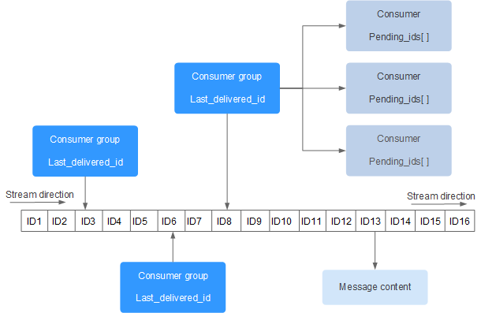
每个 Stream 都有唯一的名称，它就是 Redis 的 key，在我们首次使用 xadd 指令追加消息时自动创建。
上图解析：
消息队列相关命令：
消费者组相关命令：
使用 XADD 向队列添加消息，如果指定的队列不存在，则创建一个队列，XADD 语法格式：
XADD key ID field value [field value ...]
使用 XTRIM 对流进行修剪，限制长度， 语法格式：
XTRIM key MAXLEN [~] count
使用 XDEL 删除消息，语法格式：
XDEL key ID [ID ...]
使用 XLEN 获取流包含的元素数量，即消息长度，语法格式：
XLEN key
使用 XRANGE 获取消息列表，会自动过滤已经删除的消息 ，语法格式：
XRANGE key start end [COUNT count]
使用 XREVRANGE 获取消息列表，会自动过滤已经删除的消息 ，语法格式：
XREVRANGE key end start [COUNT count]
使用 XREAD 以阻塞或非阻塞方式获取消息列表 ，语法格式：
XREAD [COUNT count] [BLOCK milliseconds] STREAMS key [key ...] id [id ...]
使用 XGROUP CREATE 创建消费者组，语法格式：
XGROUP [CREATE key groupname id-or-$] [SETID key groupname id-or-$] [DESTROY key groupname] [DELCONSUMER key groupname consumername]
从头开始消费:
XGROUP CREATE mystream consumer-group-name 0-0
从尾部开始消费:
XGROUP CREATE mystream consumer-group-name $
使用 XREADGROUP GROUP 读取消费组中的消息，语法格式：
XREADGROUP GROUP group consumer [COUNT count] [BLOCK milliseconds] [NOACK] STREAMS key [key ...] ID [ID ...]
XREADGROUP GROUP consumer-group-name consumer-name COUNT 1 STREAMS mystream >
Redis SAVE 命令用于创建当前数据库的备份。
redis Save 命令基本语法如下：
redis 127.0.0.1:6379> SAVE
redis 127.0.0.1:6379> SAVE OK
该命令将在 redis 安装目录中创建dump.rdb文件。
redis 127.0.0.1:6379> CONFIG GET dir 1) "dir" 2) "/usr/local/redis/bin"
以上命令 CONFIG GET dir 输出的 redis 安装目录为 /usr/local/redis/bin。
创建 redis 备份文件也可以使用命令 BGSAVE，该命令在后台执行。
127.0.0.1:6379> BGSAVE Background saving started
我们可以通过 redis 的配置文件设置密码参数，这样客户端连接到 redis 服务就需要密码验证，这样可以让你的 redis 服务更安全。
我们可以通过以下命令查看是否设置了密码验证：
127.0.0.1:6379> CONFIG get requirepass 1) "requirepass" 2) ""
默认情况下 requirepass 参数是空的，这就意味着你无需通过密码验证就可以连接到 redis 服务。
你可以通过以下命令来修改该参数：
127.0.0.1:6379> CONFIG set requirepass "runoob" OK 127.0.0.1:6379> CONFIG get requirepass 1) "requirepass" 2) "runoob"
设置密码后，客户端连接 redis 服务就需要密码验证，否则无法执行命令。
AUTH 命令基本语法格式如下：
127.0.0.1:6379> AUTH password
127.0.0.1:6379> AUTH "runoob" OK 127.0.0.1:6379> SET mykey "Test value" OK 127.0.0.1:6379> GET mykey "Test value"
Redis 性能测试是通过同时执行多个命令实现的。
redis 性能测试的基本命令如下：
redis-benchmark [option] [option value]
注意：该命令是在 redis 的目录下执行的，而不是 redis 客户端的内部指令。
以下实例同时执行 10000 个请求来检测性能：
$ redis-benchmark -n 10000 -q PING_INLINE: 141043.72 requests per second PING_BULK: 142857.14 requests per second SET: 141442.72 requests per second GET: 145348.83 requests per second INCR: 137362.64 requests per second LPUSH: 145348.83 requests per second LPOP: 146198.83 requests per second SADD: 146198.83 requests per second SPOP: 149253.73 requests per second LPUSH (needed to benchmark LRANGE): 148588.42 requests per second LRANGE_100 (first 100 elements): 58411.21 requests per second LRANGE_300 (first 300 elements): 21195.42 requests per second LRANGE_500 (first 450 elements): 14539.11 requests per second LRANGE_600 (first 600 elements): 10504.20 requests per second MSET (10 keys): 93283.58 requests per second
redis 性能测试工具可选参数如下所示：
| 序号 | 选项 | 描述 | 默认值 |
|---|---|---|---|
| 1 | -h | 指定服务器主机名 | 127.0.0.1 |
| 2 | -p | 指定服务器端口 | 6379 |
| 3 | -s | 指定服务器 socket | |
| 4 | -c | 指定并发连接数 | 50 |
| 5 | -n | 指定请求数 | 10000 |
| 6 | -d | 以字节的形式指定 SET/GET 值的数据大小 | 2 |
| 7 | -k | 1=keep alive 0=reconnect | 1 |
| 8 | -r | SET/GET/INCR 使用随机 key, SADD 使用随机值 | |
| 9 | -P | 通过管道传输 <numreq> 请求 | 1 |
| 10 | -q | 强制退出 redis。仅显示 query/sec 值 | |
| 11 | --csv | 以 CSV 格式输出 | |
| 12 | -l（L 的小写字母） | 生成循环，永久执行测试 | |
| 13 | -t | 仅运行以逗号分隔的测试命令列表。 | |
| 14 | -I（i 的大写字母） | Idle 模式。仅打开 N 个 idle 连接并等待。 |
以下实例我们使用了多个参数来测试 redis 性能：
$ redis-benchmark -h 127.0.0.1 -p 6379 -t set,lpush -n 10000 -q SET: 146198.83 requests per second LPUSH: 145560.41 requests per second
以上实例中主机为 127.0.0.1，端口号为 6379，执行的命令为 set,lpush，请求数为 10000，通过 -q 参数让结果只显示每秒执行的请求数。
Redis 通过监听一个 TCP 端口或者 Unix socket 的方式来接收来自客户端的连接，当一个连接建立后，Redis 内部会进行以下一些操作：
在 Redis2.4 中，最大连接数是被直接硬编码在代码里面的，而在2.6版本中这个值变成可配置的。
maxclients 的默认值是 10000，你也可以在 redis.conf 中对这个值进行修改。
config get maxclients 1) "maxclients" 2) "10000"
以下实例我们在服务启动时设置最大连接数为 100000：
redis-server --maxclients 100000
| S.N. | 命令 | 描述 |
|---|---|---|
| 1 | CLIENT LIST | 返回连接到 redis 服务的客户端列表 |
| 2 | CLIENT SETNAME | 设置当前连接的名称 |
| 3 | CLIENT GETNAME | 获取通过 CLIENT SETNAME 命令设置的服务名称 |
| 4 | CLIENT PAUSE | 挂起客户端连接，指定挂起的时间以毫秒计 |
| 5 | CLIENT KILL | 关闭客户端连接 |
Redis是一种基于客户端-服务端模型以及请求/响应协议的TCP服务。这意味着通常情况下一个请求会遵循以下步骤：
Redis 管道技术可以在服务端未响应时，客户端可以继续向服务端发送请求，并最终一次性读取所有服务端的响应。
查看 redis 管道，只需要启动 redis 实例并输入以下命令：
$(echo -en "PING\r\n SET runoobkey redis\r\nGET runoobkey\r\nINCR visitor\r\nINCR visitor\r\nINCR visitor\r\n"; sleep 10) | nc localhost 6379 +PONG +OK redis :1 :2 :3
以上实例中我们通过使用 PING 命令查看redis服务是否可用， 之后我们设置了 runoobkey 的值为 redis，然后我们获取 runoobkey 的值并使得 visitor 自增 3 次。
在返回的结果中我们可以看到这些命令一次性向 redis 服务提交，并最终一次性读取所有服务端的响应
管道技术最显著的优势是提高了 redis 服务的性能。
在下面的测试中，我们将使用Redis的Ruby客户端，支持管道技术特性，测试管道技术对速度的提升效果。
require 'rubygems'
require 'redis'
def bench(descr)
start = Time.now
yield
puts "#{descr} #{Time.now-start} seconds"
end
def without_pipelining
r = Redis.new
10000.times {
r.ping
}
end
def with_pipelining
r = Redis.new
r.pipelined {
10000.times {
r.ping
}
}
end
bench("without pipelining") {
without_pipelining
}
bench("with pipelining") {
with_pipelining
}
从处于局域网中的Mac OS X系统上执行上面这个简单脚本的数据表明，开启了管道操作后，往返延时已经被改善得相当低了。
without pipelining 1.185238 seconds with pipelining 0.250783 seconds
如你所见，开启管道后，我们的速度效率提升了5倍。
分区是分割数据到多个Redis实例的处理过程，因此每个实例只保存key的一个子集。
redis的一些特性在分区方面表现的不是很好：
Redis 有两种类型分区。 假设有4个Redis实例 R0，R1，R2，R3，和类似user:1，user:2这样的表示用户的多个key，对既定的key有多种不同方式来选择这个key存放在哪个实例中。也就是说，有不同的系统来映射某个key到某个Redis服务。
最简单的分区方式是按范围分区，就是映射一定范围的对象到特定的Redis实例。
比如，ID从0到10000的用户会保存到实例R0，ID从10001到 20000的用户会保存到R1，以此类推。
这种方式是可行的，并且在实际中使用，不足就是要有一个区间范围到实例的映射表。这个表要被管理，同时还需要各 种对象的映射表，通常对Redis来说并非是好的方法。
另外一种分区方法是hash分区。这对任何key都适用，也无需是object_name:这种形式，像下面描述的一样简单：
开始在 Java 中使用 Redis 前， 我们需要确保已经安装了 redis 服务及 Java redis 驱动，且你的机器上能正常使用 Java。 Java的安装配置可以参考我们的 Java 开发环境配置 接下来让我们安装 Java redis 驱动：
本站提供了 2.9.0 jar 版本下载： jedis-2.9.0.jar
编译以上 Java 程序，确保驱动包的路径是正确的。
连接成功 服务正在运行: PONG
编译以上程序。
连接成功 redis 存储的字符串为: www.runoob.com
编译以上程序。
连接成功 列表项为: Taobao 列表项为: Google 列表项为: Runoob
编译以上程序。
连接成功 runoobkey site-list
开始在 PHP 中使用 Redis 前， 我们需要确保已经安装了 redis 服务及 PHP redis 驱动，且你的机器上能正常使用 PHP。 接下来让我们安装 PHP redis 驱动：下载地址为:https://github.com/phpredis/phpredis/releases。
以下操作需要在下载的 phpredis 目录中完成：
$ wget https://github.com/phpredis/phpredis/archive/3.1.4.tar.gz $ tar zxvf 3.1.4.tar.gz # 解压 $ cd phpredis-3.1.4 # 进入 phpredis 目录 $ /usr/local/php/bin/phpize # php安装后的路径 $ ./configure --with-php-config=/usr/local/php/bin/php-config $ make && make install
vi /usr/local/php/lib/php.ini
增加如下内容:
extension_dir = "/usr/local/php/lib/php/extensions/no-debug-zts-20090626" extension=redis.so
安装完成后重启php-fpm 或 apache。查看phpinfo信息，就能看到redis扩展。
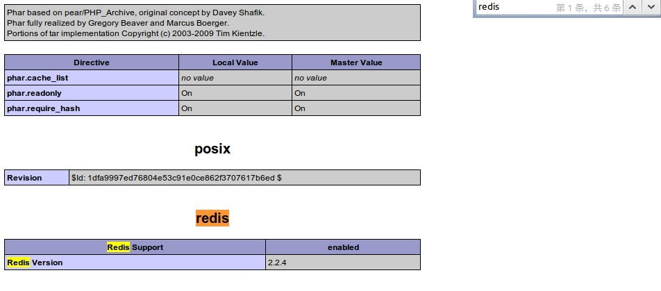
执行脚本，输出结果为：
Connection to server successfully Server is running: PONG
执行脚本，输出结果为：
Connection to server successfully Stored string in redis:: Redis tutorial
执行脚本，输出结果为：
Connection to server successfully Stored string in redis Mysql Mongodb Redis
执行脚本，输出结果为：
Connection to server successfully Stored string in redis:: tutorial-name tutorial-list